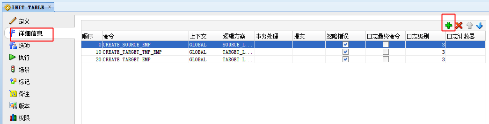

简介
ODI（Oracle Date Integrator）是Oracle Fusion MiddleWare的一个组件，它可以实现不同以及相同异构数据源之间的数据同步与集成。
ODI的架构中，主要有以下的对象：Repository 仓库、Studio 工作室、Agent 代理、Console 工作台
1、Repository分为2种类型：Master和Work。
Master库主要用于存储拓扑信息及对Work库的版本控制，用户权限控制等的管理。
Work库是定义的各种用于ETL转换的对象，是实际的Project库。里面可以存储各种结构与对象。比如Project，Model，Interface，Workflow等等信息。可以基于Work库的这个特点，可以新建不同的Work，分别用于DEV，Exec等不同用途的库。达到以目的操作对应的库，方便设计权限等。尽可能独立存储，单独的Instance，或单独的Schema。
2、Agent
实际执行者的代理人角色。所要执行的SQL语句通过代理，首先连接到要执行的DB服务器，然后发送要执行的代码进行执行，并将结果发送到目标数据库。
Agent接受多种执行方式：Studio，Console，命令行，Web Service，ODI Schedules
环境说明：
- Win10(64位)
- ODI 11G
- JDK 1.8（64位）
安装
安装前设置setup.exe兼容性win7和管理员权限，安装过程中无特殊说明默认设置即可
安装过程中会出现会要求选择第二个安装盘路径
登陆配置
创建主资料档案库
先在ORACLE下拟先用orcl数据库用system用户，创建一个主资料档案库用户的数据库用户C##ODI_MASTER
创建完进入ODI，新建->主资料档案库创建向导
创建主资料档案库-登录用户
上一步已经把ODI的系统配置导入到C##ODI_MASTER，现在开始创建基于此用户的ODI登陆用户
重复上一步，继续再创建一个开发工作使用的登陆用户
创建开发工作资料档案库
在ORACLE下登陆system用户下创建工作资料档案库的用户C##ODI_WORK
登陆ODI主资料档案库用户后，选择拓扑->资料档案库->新建工作资料档案库
创建完成后重新登录ODI ，选择开发工作资料档案库用户，点击编辑信息，将工作资料档案库选上即可，确认后登陆即可
数据库对接配置
创建数据库
简略写下创建源数据库SOURCE和目标数据库TARGET用于测试
创建数据服务器
拓扑->物理体系结构->Oracle 选中右键选择新建数据服务器
建立SOURCE的数据服务器，保存时提示警告先忽略不管
复上一步，再建立TARGET的数据服务器
在刚建立的两个数据服务器上，分别右键新建两个物理方案
创建逻辑方案
拓扑->逻辑体系结构->新建逻辑方案，选择刚建立的物理方案
创建模型
模型用于将数据库表映射到ODI
因为库中表较多，所以我们指定表进行逆向工程
将SOURCE和TARGET的表分别通过逆向工程导入ODI
我们需要建立三个相同表结构的表：SOURCE数据库：SOURCE_EMP，TARGET数据库：TARGET_EMP、TMP_TARGET_EMP
因为没给TMP_TARGET_EMP表建立主键，我们所以需要在ODI设置关键字，不然会报错：如果未在目标数据存储中声明关键字, 则不能进行流控制
新建项目
导入知识模块
定义：知识模块（KM）是代码模板，定义什么类型的SQL查询（插入，选择，等等）或是哪些脚本需要生成来完成数据提取，加载和转换操作。
类型说明：
- RKM：RKM完成从源系统和目标系统的数据结构的反向工程来形成数据模型的功能。
- CKM：CKM完成数据质量检查。
- LKM：LKM完成从源数据库数据加载到临时表。
- IKM：IKM完成从临时表的数据加载到目标表。
- SKM：SKM完成ODI和WEB服务接口的功能。
- SKM(Service KM)：Web服务知识模块，可以使用该知识模块来生成Web服务调用
创建过程
因为在同一过程中处理SOURCE和TARGET不同数据源，所以这里勾选多连接，并选择数据库对应技术
建立过程中的处理，下面建的三个处理都是使用上一步三个表的建表脚本

可以先执行一遍，可以点击操作查看执行日志
建立一个用于将TARGET的TMP表增量同步到正式表的过程
创建接口
用于将SOURCE数据拉取到TARGET的TMP表
我们建立的关键字在这里可以看到自动关联进来
新建程序包
将过程和接口拖入图表区域连接起
点击OdiSleep设置休眠时间
这样就完成了不同数据库数据的定时增量同步功能了~
调度
生成场景后，新建调度任务
设置重复间隔
查看设置的调度
设置调度后，并进入拓扑，打开对应的代理点击更新调度才能生效，点击查看调度可以查看到正在调度情况
FAQ
1、错误：ORA-00904: “LASTUPDATE”: 标识符无效
场景：接口同步报错，表中已经有LASTUPDATE字段，但是同步还是说标识符无效
原因：下图可以看到用ODI同步的时候，不同的知识模块，会自己建立相应的临时表存放从源数据库拉取的数据，再同步到我们的表里。
LASTUPDATE是后面加的，导致了ODI的临时表没有这个字段，从ODI的临时表导入我们表时，发现我们表多了LASTUPDATE字段，所以报错
解决：删除ODI建立的临时表重新进行同步
2、错误：ORA-01729: 需要数据库链接名
场景：模型能映射表结构到ODI，但是接口同步报错
解决：能映射表结构到ODI，说明数据服务器的JDBC连接到数据库端没问题，因为是不同数据库的同步，所以需要在红框中填入建好DBLINK，如果是本地同库不同schema可以直接用localhost
3、参数传入一直为空
场景：默认参数一直无法传入
解决：先将执行日志界别跳高到6，查看日志中参数传入的值是什么，如果已经有默认值单传入还是空的，可以查看参数->历史记录，把删掉里面的记录
脚本
1 | --【主资料档案库】 |